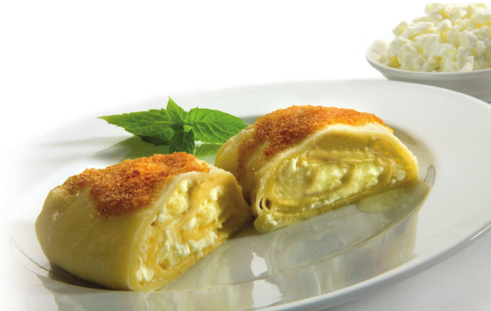

Struklji

Description
Traditional Slovenian struklji are made from phyllo dough with a cottage cheese filling. They can be sweet or savoury.
Ingredients
- 300g all-purpose flour 00, plus more for rolling
- 90ml water
- 1 egg
- 2 tsp melted butter
- 1 tsp apple cider vinegar
- pinch of salt
- 500g cottage cheese
- 200g sour cream
- 3 eggs
- 1 tsp salt
- 50g butter
- 60g breadcrumbs
- 1 tsp cinnamon
- pinch of salt
- homemade jam
Steps
- Combine all the ingredients and mix well. Transfer to a clean working surface and knead for about 5 minutes until the dough feels beautifully elastic. Cover the dough for 5 minutes, then knead again and make a ball. Wrap it up tightly and place it in the fridge overnight.
- Place a large tablecloth on your table and sprinkle with flour. Roll out the dough thinly, then gently stretch it with your hands. Make sure that the dough doesn’t brake, so work slowly and carefully. It is best to stretch it from the center outward. Ideally, the dough should be translucent and extremely thin.
- Cut in sheets and sprinkle with flour. For two cheese dumplings, you will need 4 thin phyllo dough sheets. Feel free to use store-bought filo pastry instead (or if in a hurry).
- In a large bowl mix all the filling ingredients into a smooth creamy texture. Place a clean kitchen towel that wasn’t washed with any fabric softener (as that will leave a weird taste in the dumplings) on your clean working surface. Sprinkle the kitchen towel with flour. Place two sheets of phyllo pastry on top. Evenly spread half of the filling on top of the phyllo pastry, leaving about a 3 cm edge on top. Start from the bottom of the pastry and roll the dumpling tightly into a roll. Wrap the dumpling in the kitchen towel tightly and tie the ends together with a string. Repeat with the second dumpling and the rest of the filling.
- Pour enough water into a large pot, add some salt, and bring to a boil. Carefully add the wrapped dumplings into the pot and cook on low heat for about 30 minutes covered with a lid. Make sure all the dumplings are submerged in water. Discard the water and let the dumplings cool for a while. Then carefully unwrap them and cut them into desired slices.
- For the topping melt butter in a pan and add breadcrumbs, cinnamon, and a pinch of salt and cook for a few minutes until golden brown. Add on top of cheese dumplings and a teaspoon of homemade jam, cranberry jam works really well!